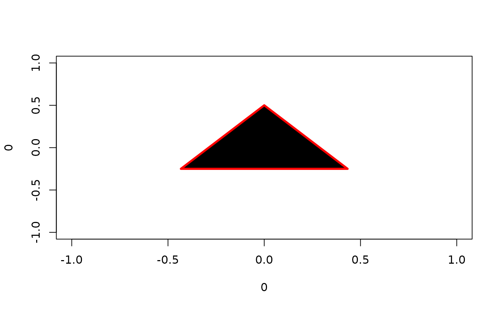

A collection of functions for plotting polygonal shapes.
Usage
square(x, y, d = 0.9, ...)
rectangle(x, y, d = 0.9, dx = d, dy = d, ...)
circle(x, y, d = 0.9, n = 1000, ...)
ellipse(x, y, d = 0.9, dx = d, dy = d, n = 1000, ...)
rcpoly(x, y, n, d = 0.9, rotate = 0, ...)
shapes(x, y, n, d = 0.9, dx = d, dy = d, rotate = 0, ...)Arguments
- x, y
coordinates
- d
**optional** diameter, see details
- ...
**optional** graphical parameters `col`, `border`, `lty` and `lwd` passed to [graphics::polygon()] or [graphics::rect()]
- dx, dy
**optional** diameter in either coordinate direction
- n
the number of vertices of polygon, with the minimum of three (triangle). Large `n`, such as `n=1000` approximate circle. The vertices start at the 12 o'clock position and are placed clockwise in a regular intervals.
- rotate
**optional** clockwise rotation in degrees (0-360°), not available for `square` and `rectangle`
Details
Polygons are drawn centered on the `x` and `y` coordinates, with a diameter `d` (or `dx` and `dy`). Typically, different shapes are obtained through a parametrization of the `shapes()` function, which draws a convex polygon using the [graphics::polygon()], with the exception of `square()` and `rectangle()` function, which use the [graphics::rect()] function instead, behave slightly differently, and should be slightly faster.
The diameter parameter `d` is interpreted differently depending for `square()` and `rectangle()` and for other polygonal functions build on the `shapes()` function (`circle()`, `ellipse()` and `rcpoly()`). For the `square()` and `rectangle()`, the diameter is the size of the square, `d=1` thus fills the whole 1x1 tile. For `shapes()` function, `d` is the diameter of the inscribed circle to the square of size `d`. This is more convenient solution to prevent accidental overplotting when individual shapes are plotted next to each other in regular intervals, the distance between such points would be equal to the diameter in both cases. See examples.
All shapes function accept the graphical parameters `col`, `border`, `lty` and `lwd`, which are passed to the [graphics::polygon()] and [graphics::rect()]. Apart of a different default values, they behave in the same way.
All parameters are vectorized and will recycle as required, with the typical warning if parameters are not multiply of each other. This can be used to create pleasant geometric images. See examples.
Functions
square(): draw squaresrectangle(): draw rectanglescircle(): draw circlesellipse(): draw ellipsesrcpoly(): draw regular convex polygonsshapes(): draw convex polygons
Examples
plot(0, 0) # create plotting window
# Following calls are equivalent
square(0, 0, 1)
rectangle(0, 0, 1)
rectangle(0, 0, dx=1, dy=1)
# Not equivalent to `square`
rcpoly(0, 0, 4, d=1)
# Same output as `square`, but not equivalent
rcpoly(0, 0, 4, d=sqrt(2), rotate=45)
# Vectorizing parameters
plot(0, 0)
rotate = seq(0, 18, by=30)
d = seq(1, by=-0.1, length.out = length(rotate))
rcpoly(0,0,3, border="red", lwd=3, rotate=rotate, d=d)
